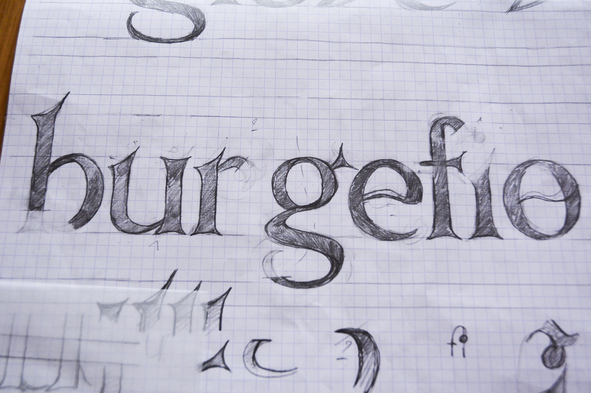

Hiræth - work in progress
//
Typographie inspirée des écritures gravées présentes dans les églises anglicanes, en Angleterre et au Pays de Galles. Ces caractères sont tous très différents, et j'ai voulu créer une typographie qui rassemble ces différentes lettres, en conservant leurs dénominateurs communs, pour, non pas simplement numériser ces écritures telles quelles, mais en faire ressortir ce qui fait leur intérêt, et traduire ainsi une époque et un lieu. Hiræth est un mot gallois intraduisible, mais qui cherche à signifier une nostalgie du Pays de Galles des temps anciens et, de manière plus générale, un désir d'un lieu que l'on a quitté, mais qui est comme une maison. J'ai ansi voulu, par cette typographie, essayer de représenter ma vision du Pays de Galles, et mon attachement pour celui-ci.
First sketches for a future typeface, inspired byTypeface, inspired by all the engraved letters that can be found in Anglican churches, in England and Wales. All these letters are very different, so I wanted to imagine a typeface that can create a harmony between them, and keep their common elements. But I didn't wanted to simply digitize them, but showing why they are interesting. Hiræth is an welsh world that can't be translated, but describes a yearning, a nostalgia for the Wales of the past, and more generally a desire of a place you left, a homesickness for a home to which you cannot return. I tried, with this typeface, to represent my view of Wales, and my attachment for this country.
